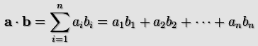

dot_product_normalised(x1, y1, x2, y2)
| 参数 | 描述 |
|---|---|
| x1 | 第一个向量的x坐标。 |
| y1 | 第一个向量的y坐标。 |
| x2 | 第二个向量的x坐标。 |
| y2 | 第二个向量的y坐标。 |
返回值: 实数
点积是一个表达两个向量间角度关系并用两个向量相乘①然后相加的结果。“点积”这个名字源自于经常被用于指明这种运算的中心圆点符号“·”（又称为“标量积”（数量积），强调了其结果本质是一个标量而不是向量）。
实质上的数学公式可以被写成像这样：

①：此处的“相乘”表示两个向量的分量各自相乘，即x1y1和x2y2
所以在2维中向量a(x1,y1)和b(x2,y2)的点积是x1y1+x2y2，意味着在GameMaker: Studio中点积被计算为：
a · b = x1*x2+y1*y2;
什么是正规化点积呢？正规化点积已经被以一种方式改变来返回一个在[-1,1]之间的值（详情参见Normalised Vectors），其在许多场合中格外有用，特别是当处理灯光或者其他3D函数时。
var x1, y1, x2, y2;
x1 = lengthdir_x(1, image_angle);
y1 = lengthdir_y(1, image_angle);
x2 = o_Player.x - x;
y2 = o_Player.y - y;
if dot_product_normalised(x1, y1, x2, y2) > 0 seen=true else
seen=false;
上述代码使用实例的image_angle创建了一个向量，并接下来获取从玩家物体"o_Player"到它自身的向量。最终它计算了这两个向量的点积并且如果大于0就将变量"seen"设定为true，且如果小于等于0则设定为false。
| Converted from CHM to HTML with chm2web Pro 2.85 (unicode) |